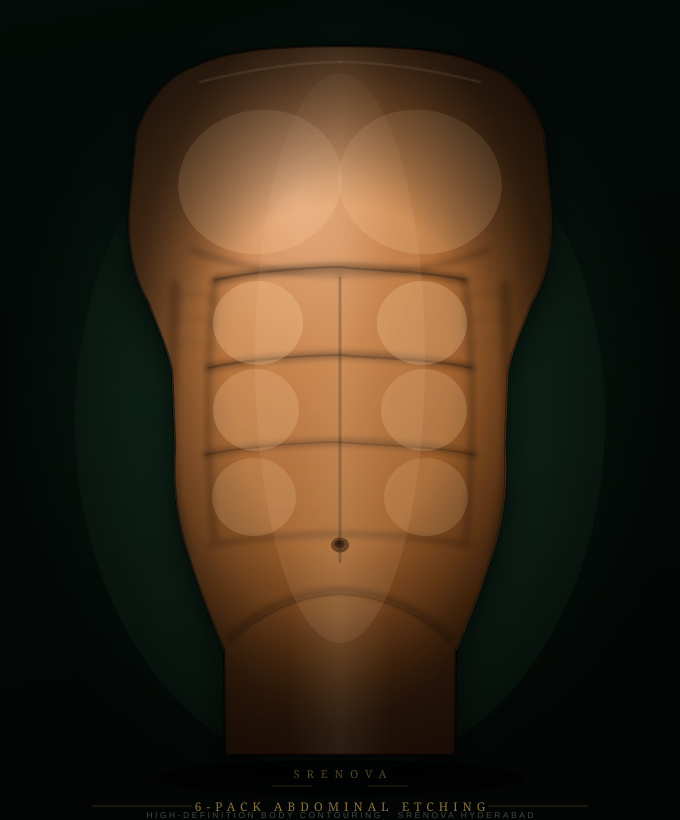

01
Step 01Candidacy assessment
Body fat percentage, skin elasticity, muscle development and health history are reviewed.
6-Pack Abs Surgery — also called abdominal etching — uses high-definition liposuction to selectively remove fat from the natural grooves between abdominal muscle segments.
The procedure reveals existing muscle structure. Good candidates have reasonable baseline fitness, low-to-moderate fat coverage and good skin elasticity.

Body fat percentage, skin elasticity, muscle development and health history are reviewed.
The surgeon marks the abdominal lines to guide precise fat removal around each segment.
Compression garment, restricted activity and swelling timeline are explained before surgery.
Abdominal etching is not a shortcut to fitness. It is a precision procedure for individuals who already have muscle development but retain a layer of fat that obscures definition.
Suitability depends on fat distribution, skin quality, BMI range and realistic expectations about what surgery can and cannot produce.
Understanding the limits of the procedure helps set a realistic plan.
Removes fat obscuring existing abs structure.
No underlying development means no definition to reveal.
Loose or inelastic skin may not produce clean lines.
Significant weight gain reduces visible results over time.
Quick clarity before the consultation so the conversation is more useful.
Performed under anaesthesia by a specialist surgeon.
Six muscle segments made visibly distinct through the skin.
Compression garment and restricted activity required.
Swelling settles over weeks; final result visible at 2–3 months.
Clear answers help patients make a more informed decision.
Yes. The procedure removes fat from around existing muscle. If the rectus abdominis is underdeveloped, there is nothing to etch — results depend on the muscle structure you already have.
A 6-Pack creates definition across three pairs of muscle segments. An 8-Pack adds a fourth pair further up the abdomen. The 8-Pack requires stronger baseline musculature and is technically more demanding.
Most patients wear a compression garment for 3–4 weeks and avoid strenuous exercise for 4–6 weeks. Swelling settles progressively; full definition is typically visible by 2–3 months.
Fat cells removed do not return. However, significant weight gain can add new fat over the area, reducing visible definition. Maintaining a stable weight protects the result.
Soreness and tightness are common in the first week. Pain is managed with prescribed medication. Discomfort is typically well-tolerated by the recovery week.
For patients with strong underlying musculature, 8-Pack Abs Surgery extends definition to eight muscle segments.
Book a SRENOVA consultation for an honest assessment of your anatomy, suitability and realistic outcomes.